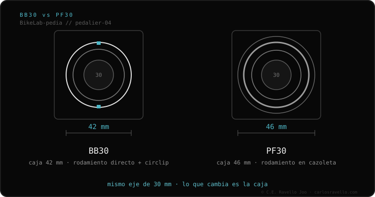

BB30 es un pedalier a presión creado por Cannondale. La caja del cuadro mide 42 mm y aloja un eje de 30 mm; los rodamientos se prensan directos contra circlips, sin cazoletas. Es rígido y ligero, pero famoso por crujir. Ojo: NO es lo mismo que PF30, que mide 46 mm y usa cazoletas.
Si tu bici es de carbono de ruta de los años 2010–2016 y el hueco del pedalier es liso, probablemente sea BB30. Es el origen de la fama de los pedalieres que crujen.
BB30 lo introdujo Cannondale y luego se liberó como estándar abierto. En vez de enroscar nada, los rodamientos se prensan directamente en el cuadro y topan contra unos anillos de retención (circlips). Al eliminar cazoletas, ahorra peso y permite un eje grueso de 30 mm muy rígido.

Diseñado para bielas con eje de 30 mm. Puedes montar ejes de 24 mm (Shimano) o SRAM DUB (28.99 mm) solo con adaptadores reductores que se insertan en el rodamiento. No es compatible con PF30: aunque ambos usan eje de 30 mm, la caja es distinta (42 vs 46 mm).
¿Tu BB30 cruje o no sabes si una biela te entra? Mándanos el caso: Escríbenos por WhatsApp
No. BB30 tiene caja de 42 mm con rodamiento directo; PF30 tiene caja de 46 mm con cazoletas. No son intercambiables.
Porque el rodamiento va prensado directo en el cuadro: si pierde grasa, entra suciedad o el ajuste no es perfecto, se mueve y suena.
Sí, con adaptadores reductores específicos que llevan el rodamiento de 30 mm a 28.99 (DUB) o 24 mm (Shimano).
© 2026 BikeLab Studio. Contenido bajo CC BY 4.0: puedes copiarlo, traducirlo y publicarlo, incluso con fines comerciales. La cita es obligatoria. Sin atribución, la licencia se revoca de forma automática (CC BY 4.0, §6.a) y el uso pasa a ser una infracción de derechos de autor: solicitamos la retirada del contenido y su desindexación. · Diseño y propiedad: Carlos Ravello Joo